작업 흐름
- 입력
- 장소 한 줄 (누구의 어떤 곳인지, 어느 지역과 시대인지)
- 브리프
- 건축 양식 · 땅 · 식생 · 물, 좌표가 있는 배치도, 상태별로 보여 줄 것, 그 장소를 이루는 표면과 소품 목록
- 스캔 고르기
- 표면마다 후보 두세 개(태그 · 실제 크기), 그 장소에 놓일 물건과 자라는 풀, 나무의 잎 아틀라스, 통째 스캔 나무와 구조물 키트(실제 삼각형 수와 용량을 재서 고르고 무거운 것은
heavy로 표시) →assets.json(애셋마다 받을 맵 지정) → 스크립트로 내려받기(실제 삼각형 수 출력) → 재질 시트에서 읽히는 것 · 방향 · 톤 판정 - 땅 · 건물 · 살림
- 높이 함수와 물 · 길, 부품으로 짓는 건물, 스캔 재질의 밝기 맞춤, 생성 소품 자리에 서는 스캔 모델과 좌판 · 문가 · 벽 밑에 놓이는 꾸러미(kit), 스캔 식생의 분포 규칙, 숫자로 기르고 촬영한 잎을 입히는 나무, 한 그루가 눈에 띄는 자리에 세우는 통째 스캔 나무, 조각을 위에서 그려 본 뒤 맞춰 세우는 구조물 키트(충돌 상자 · 걸을 수 있는 데크)
- 평가와 검사
- 스캔 켬 · 끔 비교, 스캔이 모두 도착하고 제대로 구워졌는지, 시점마다 스캔이 차지하는 삼각형 수, 보행 지도와 산책 경로, 상태별 화면 자동 검사
- 출력
- 걸어 다니는 페이지(
index.html+assets/, 또는 Poly Haven 서버에서 읽는 HTML 한 파일), 스틸과 콘택트 시트, 산책 영상 MP4
node scanned-realm/scripts/fetch-assets.mjs scanned-realm/examples/village # assets.json → assets/ (254 MB)
node scanned-realm/scripts/build.mjs scanned-realm/examples/village # index.html
node scanned-realm/scripts/check.mjs scanned-realm/examples/village # check OK
node scanned-realm/scripts/render.mjs scanned-realm/examples/village --mats # 재질 시트
node scanned-realm/scripts/render.mjs scanned-realm/examples/village --views
node scanned-realm/scripts/build.mjs scanned-realm/examples/village --cdn --out realm.html
node scanned-realm/scripts/new-realm.mjs ~/my-realm # 새 장소 폴더조작: W A S D · 방향키로 걷기, Q E · ← →로 돌기, 마우스로 둘러보기(클릭하면 고정), Shift 달리기, Space 뛰기. 모바일은 왼쪽 엄지가 조이스틱, 오른쪽 엄지가 시선. 게임패드는 왼쪽 스틱으로 걷고 오른쪽 스틱으로 둘러봅니다. 1–4 시간, 5–7 날씨, T 자동 순환, C 자동 산책, L 걸을 때 렌즈(피사계 심도 · 자동 산책에는 늘 켜짐), G 품질, P 성능 수치(?prof=1이면 패스별 GPU 시간). 걷기는 1인칭 시점이며 몸은 그리지 않습니다. 페이지는 생성 재질로 먼저 시작하고 스캔은 걷는 동안 도착합니다(통째 스캔 나무는 맨 나중에, 휴대폰과 가장 낮은 품질에서는 빼고 엔진의 나무로 대신함). 휴대폰에서는 캔버스를 CSS 픽셀당 2픽셀로 잡고 초당 30프레임을 기준으로 내부 해상도를 조절하며(?fps=60이면 60 기준), 작게 그린 프레임은 여러 프레임에 걸쳐 캔버스 해상도로 복원합니다. 3D 화면이 시작되지 않으면 안내와 함께 안전 모드(가장 낮은 품질)로 다시 엽니다. 요구 사항: Node 18+, Playwright Chromium, curl, ffmpeg, 내려받을 때 네트워크. 페이지는 WebGL 2와 GPU가 필요합니다.
샘플
예제 「은여울 마을」은 living-realm의 같은 마을에 스캔 재질 18종, 스캔 모델 58종, 잎 아틀라스 3종을 넣은 것입니다. 카드를 누르면 라이브 페이지가 그 자리 · 그 시간 · 그 날씨로 열립니다. 페이지는 생성 재질로 바로 시작하고, 스캔 254 MB는 걷는 동안 Poly Haven 서버에서 도착해 제자리를 채웁니다(화면 왼쪽 위에 출처와 도착 수 표시). 그중 105 MB는 통째 스캔 나무 넷이고, 휴대폰과 가장 낮은 품질에서는 받지 않습니다. GPU가 있는 기기에서 여세요.
은여울 마을 스캔 재질 18종 · 스캔 모델 58종 · 잎 아틀라스 3종
포장 · 벽 · 지붕 · 목재 · 나무껍질은 Poly Haven의 촬영 재질을 실제 크기로 깔았습니다. 통 · 탁자 · 바구니 · 그릇 · 연장 · 과일과 빵 · 바위 · 암벽 · 석상은 스캔 모델이고, 종류마다 한 번에 그리며(인스턴싱) 화면에서 삼각형이 두 픽셀쯤 되는 단계(LOD)를 골라 씁니다. 고사리 · 쐐기풀 · 소리쟁이 · 민들레 · 들꽃은 스캔 식생, 나뭇잎은 촬영한 잎과 잔가지 사진입니다. 집과 지형, 숲의 나무(줄기와 가지), 풀잎은 코드가 만듭니다.
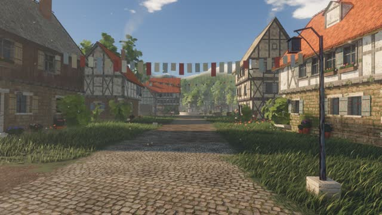
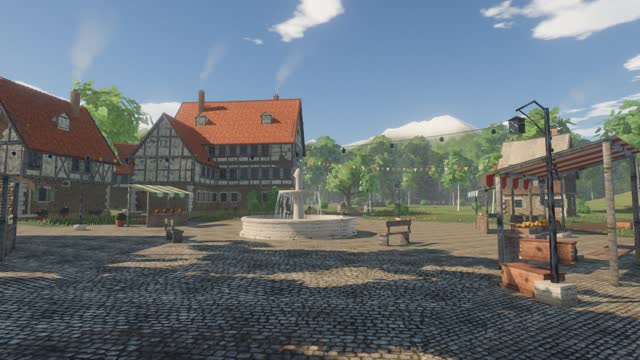
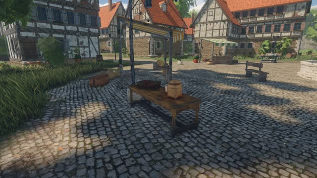
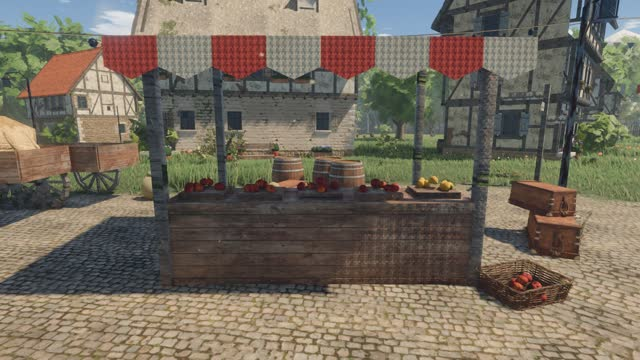
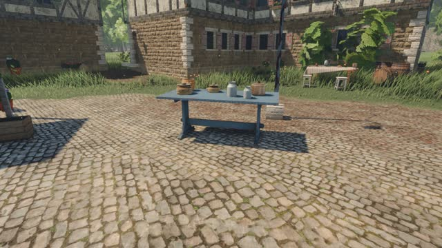
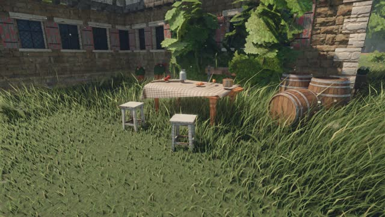
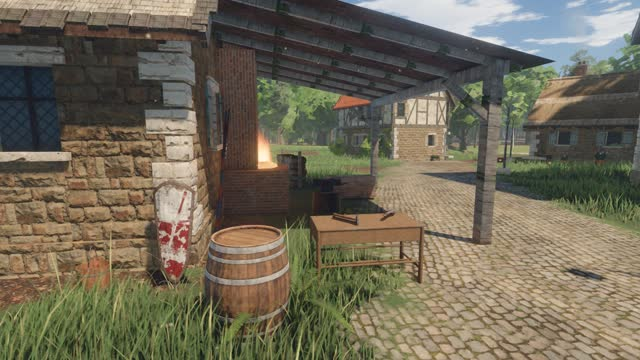
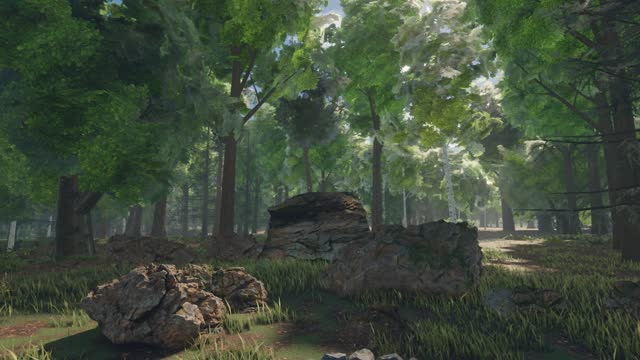
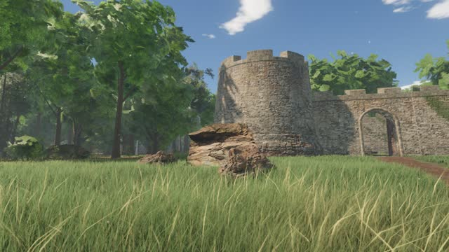
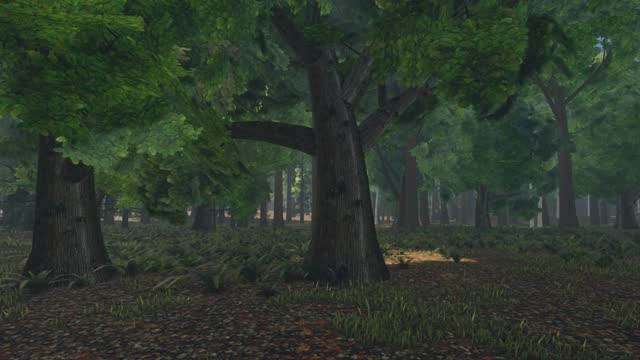
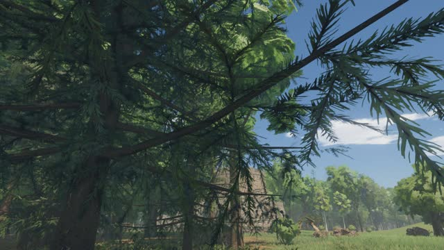
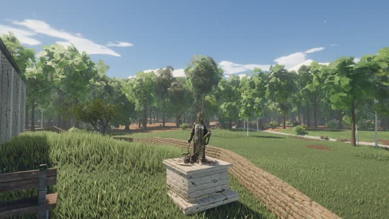
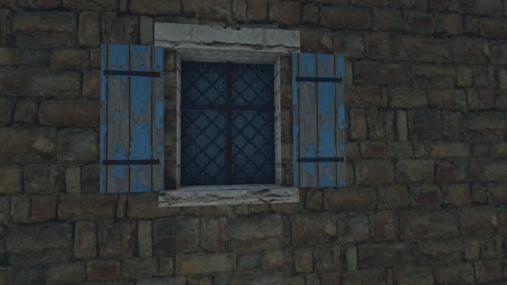
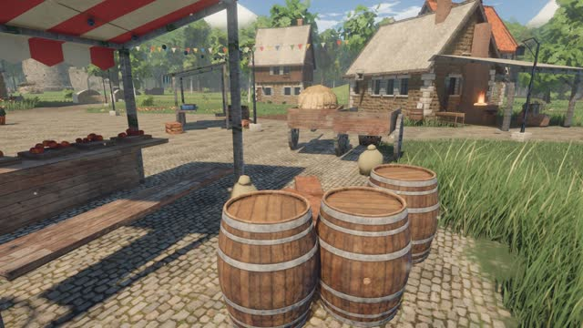
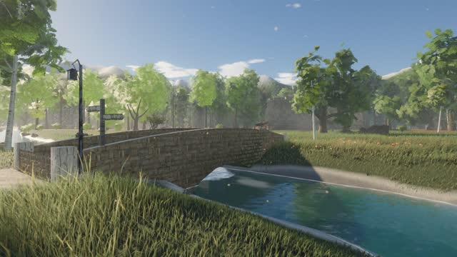
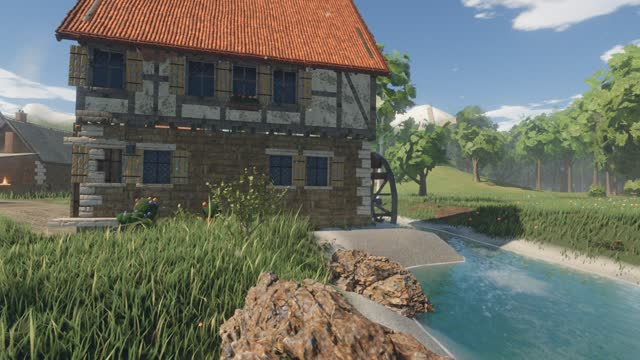
스캔 구조물 · 통째 스캔 나무 옛 성터 · 부두 · 철문 · 나무
Poly Haven에는 집 스캔이 없고, 조각으로 된 키트가 있습니다. 요새 키트의 성벽 · 성문 · 모퉁이 · 둥근 망루를 초원 북쪽에 맞춰 세워 「옛 성터」를 만들고, 연못의 부두와 예배당 뜰의 철문도 스캔으로 바꿨습니다(모두 걸어서 지나다닐 수 있음). 나무는 브라우저가 받을 수 있는 것만 통째로 씁니다: 3.4 m짜리 비틀린 나무 한 종(107만 삼각형 · 45 MB)을 일곱 곳에, 전나무 · 소나무 묘목과 관목을 숲 가장자리와 벽 밑에. 다 자란 전나무 · 소나무 스캔은 700만–1,700만 삼각형 · 465–914 MB라 쓰지 못하고, 숲은 여전히 엔진이 기른 나무입니다.
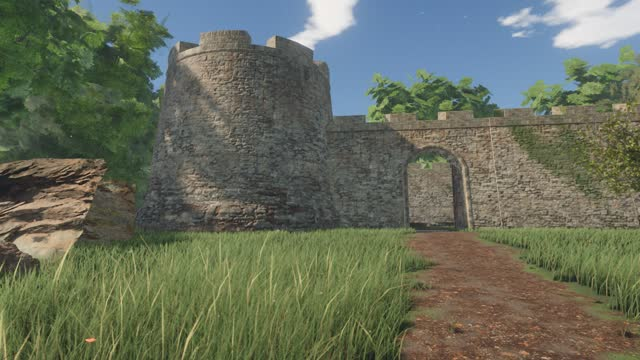
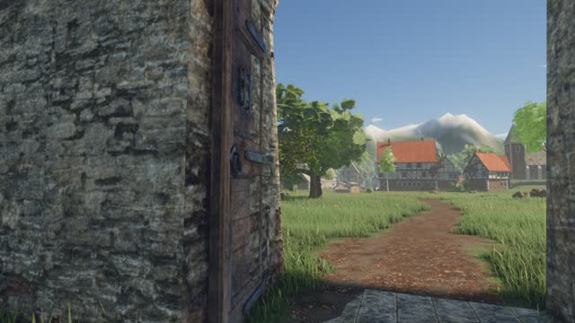
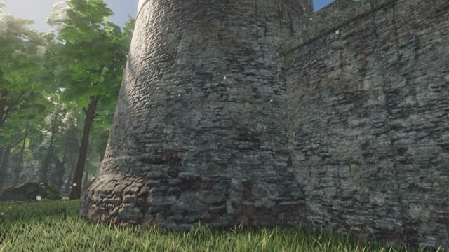
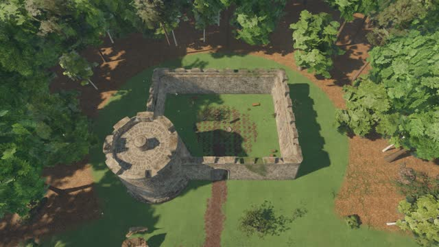
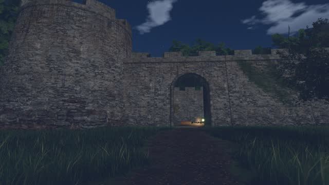
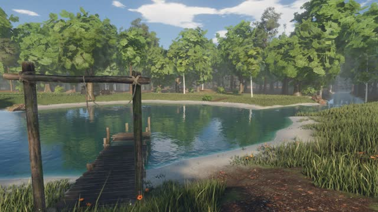
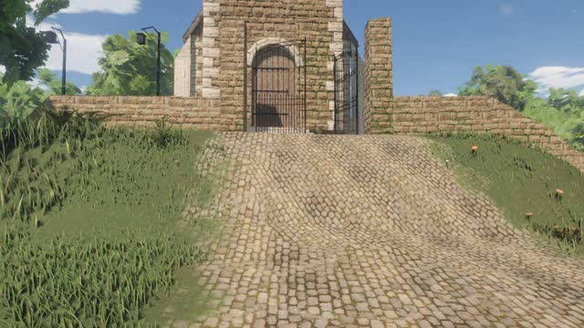
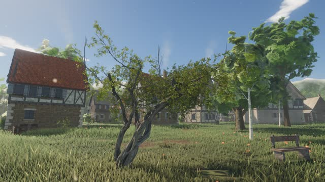
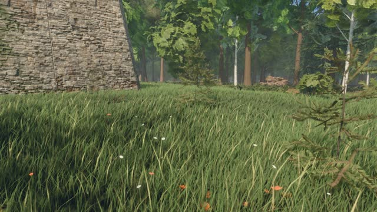
렌즈 · 바닥 피사계 심도 · 타일 반복
자동 산책에는 렌즈가 걸립니다: 화면 가운데가 보는 거리에 초점이 맞고 그보다 가깝거나 먼 것은 부드럽게 흐려집니다(직접 걸을 때는 꺼져 있고 L로 켬, ?dof=0으로 끔). 지면의 스캔 재질은 높은 품질에서 조각마다 다른 오프셋으로 두 번 읽어, 위에서 봐도 같은 돌이 격자로 되풀이되지 않습니다.
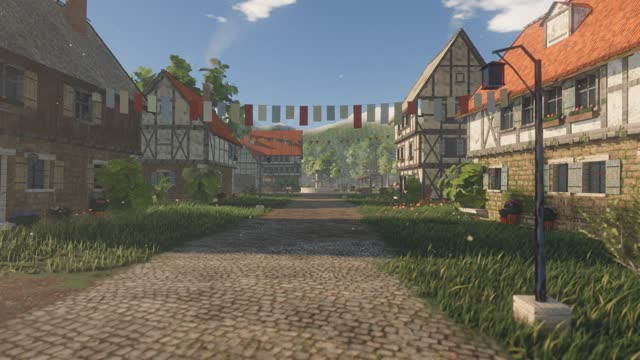
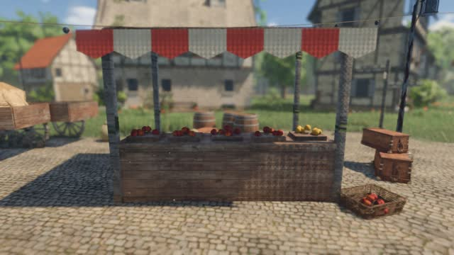
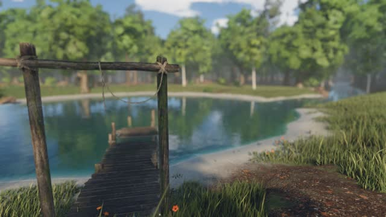
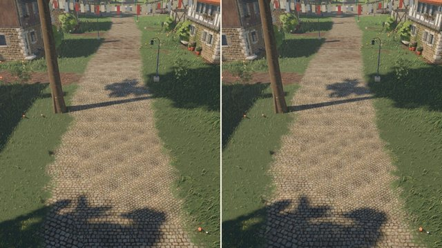
스캔 켬 · 끔 같은 자리 · 같은 시간
표면마다 생성 쌍둥이(코드로 구운 재질)가 있고, 통 · 상자 · 그루터기 · 바위도 생성 소품이 있습니다. ?scan=0으로 열면 그것만으로 그립니다. 스캔이 도착하기 전 처음 몇 초도 오른쪽 화면처럼 보입니다.
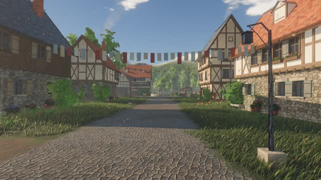
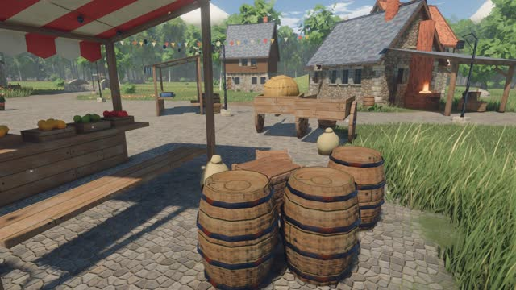
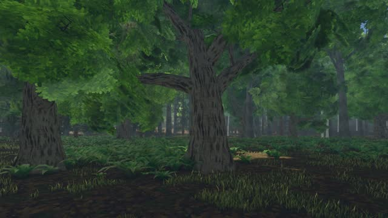
시간 · 계절 · 날씨 스캔도 같은 상태를 읽음
스캔 재질은 엔진의 재질 레이어에 다시 구워지므로 비에 젖고, 높이 맵의 낮은 곳에 웅덩이가 차고, 위를 보는 면에 눈이 쌓입니다. 웅덩이와 젖은 돌은 건너편 집과 불 켜진 창, 등불, 하늘을 비춥니다(화면 공간 반사 · 휴대폰을 포함한 모든 품질 단계). 스캔 모델과 식생도 같은 표면 법칙으로 그리므로 젖고, 물들고, 눈을 받습니다.
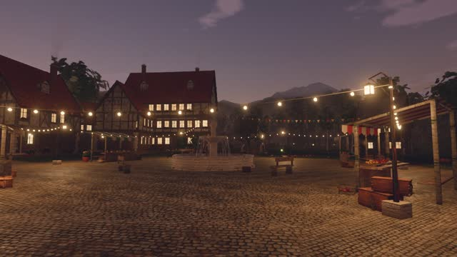
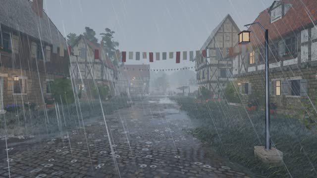
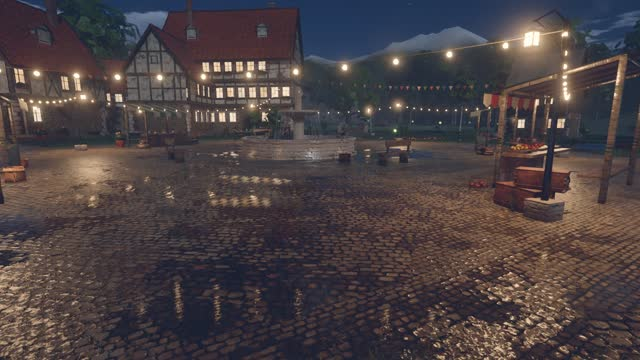
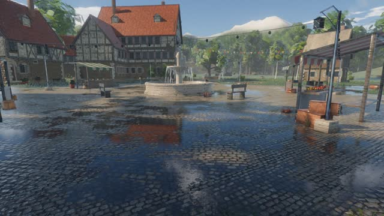
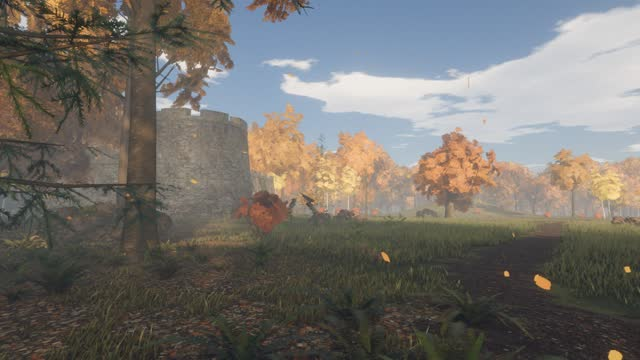
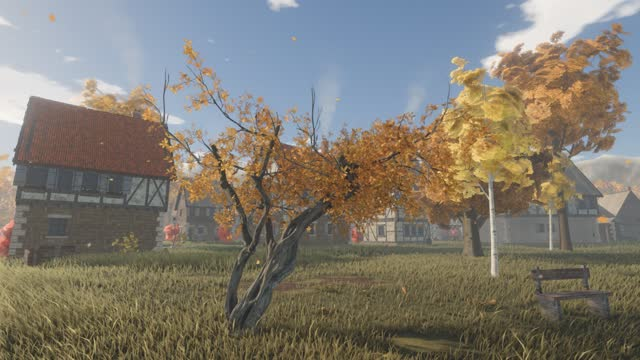
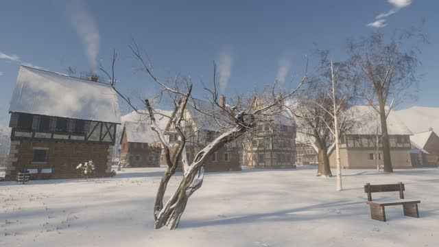
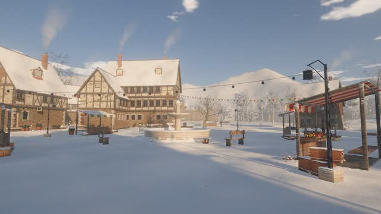
다른 주제 스타터 · 다른 스캔 목록
같은 엔진으로 만든 산속 호숫가 오두막입니다. 판자벽 · 초가 · 막돌 · 흙 · 숲 바닥 · 소나무 껍질을 마을과 다른 스캔 9종으로 골랐고, 스캔 바위 · 고사리와 침엽수 잔가지 아틀라스도 씁니다. 새 장소는 이 폴더를 복사해 시작합니다.
검증 재질 시트 · 스캔 도착 · 삼각형 수 · 휴대폰 화면
check.mjs가 이름 붙인 스캔이 모두 도착하고 비어 있지 않게 구워졌는지, 스캔 모델이 몇 개 놓였고 시점마다 몇 삼각형을 쓰는지 세고(은여울 마을, medium 단계: 시점마다 2.9–4.0 M 삼각형 · 드로 콜 480–570개(그중 330–380개는 스틸이 한꺼번에 그리는 그림자 캐스케이드) · 스캔은 복사본 320–330개에 0.21–0.25 M 삼각형, 마을 전체에 23,525개 배치), 산책 경로 전체를 벽 · 나무 · 깊은 물과 대조하고, 시점마다 낮 · 노을 · 밤 · 비 · 눈을 렌더해 확인합니다. 프레임 속도는 GPU가 없는 환경에서 만들어 재지 못했습니다. 실제 기기에서는 ?prof=1로 패스별 GPU 시간을 볼 수 있습니다.
실제 작품
이 스킬은 이 레포에서 living-realm의 예제 「은여울 마을」에 스캔을 넣으며 다듬었습니다. 목표로 삼은 화면은 Rez의 X 게시물이고, 스캔은 모두 Poly Haven(CC0)에서 받습니다. Megascans는 무료가 되었지만 Fab 라이선스가 원본 파일을 공개 페이지에서 내려 주는 것과 스크립트 내려받기를 금지하므로 쓰지 않습니다. 세 번째 작업에서 통째 스캔 나무 · 스캔 구조물 · 산책 렌즈 · 반복이 보이지 않는 바닥을 더했습니다. 숲 전체는 여전히 엔진의 나무입니다: Poly Haven의 다 자란 전나무 · 소나무는 700만–1,700만 삼각형 · 465–914 MB라 브라우저 페이지로는 받을 수 없고, 집 스캔은 라이브러리에 없습니다.
링크
- SKILL.md 워크플로 · 규칙 · 계약
- 폴더 lib · scripts · references · starter · examples
- README.md 빠른 시작 · 조작
- references/ASSETS.md 스캔 고르기 · LOD · 식생 · 통째 스캔 나무(쓸 수 있는 것과 없는 것의 표) · 구조물 키트 · 잎 아틀라스 · 용량과 스트리밍 · 라이선스 표(Megascans 포함) · 배포, 써 보고 뺀 것
- references/BRIEF.md 주제 → 브리프, 검토 기준
- references/LOOK.md 화면을 이루는 것과 한계
- references/KIT.md 모든 빌더와 옵션
- references/PERF.md 프레임 구성 · 시점별 삼각형 수 · 패스별 GPU 시간 재는 법 · 로딩
- references/SOURCE.md 무엇으로 만들었는지, 조건을 풀어 달라진 것과 그대로인 것
- references/LESSONS.md 스캔을 넣으며 겪은 문제와 해결
- living-realm 같은 엔진의 에셋 0개 · HTML 한 파일 판